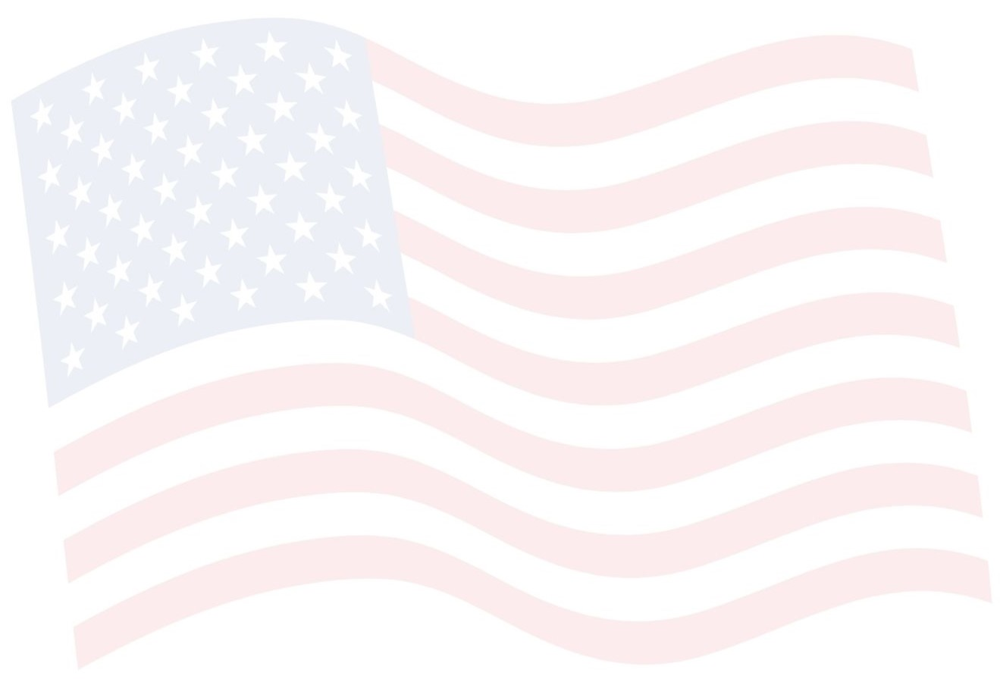
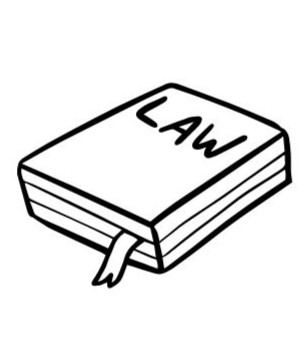
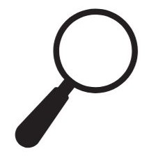
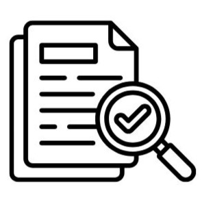
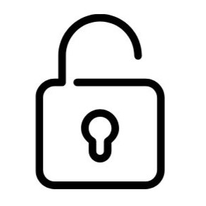

IMSがリカバリーできる理由
WHY IMS SUCCEEDS WHERE OTHERS FAIL

日米双方の法律に精通した専門チーム
行政書士法人IMSは日本の行政書士法と米国移民法の両面から申請を設計します。他社では対応困難なケースも、2002年以来20年超の実績で培った知識で最適なアプローチを立案します。

却下原因の徹底的な分析と再設計
「なぜ却下されたか」を深掘りするヒアリングを複数回実施。表面的な書類修正ではなく、申請戦略そのものを根本から再構築します。曖昧な理由で断るケースも、まず原因解明から始めます。

書類作成から面接シミュレーションまでフルサポート
DS-160の精緻な作成、必要書類の精査、そして大使館面接に向けた模擬練習まで一貫して対応。「書類を作成して終わり」ではなく、最終面接まで伴走します。

守秘義務の徹底と誠実な診断
行政書士法に基づく厳格な守秘義務のもと、入国拒否歴・逮捕歴・不法滞在歴なども安心してご相談いただけます。取得が困難と判断した場合は正直にお伝えする誠実さも、IMSの信頼の証です。
他社対応で不許可になる、3つの理由
WHY OTHER AGENCIES FAIL

案件の難易度を
見誤っている
逮捕歴・オーバーステイ・ESTA拒否歴など、難易度の高い案件には特殊な知識と経験が必要です。一般的なビザ申請と同じアプローチでは、 却下は必然です。
書類の精度と
戦略が不十分
些細な記載ミスや、申請書類の組み立て方の甘さが即・不許可につながります。大使館の審査傾向を把握した、緻密な書類戦略が不可欠です。
面接対策が
行われていない
書類の正確性と同等に重要なのが、領事との面接です。想定問答・回答の一貫性・印象管理まで含めたシミュレーションなしでは、合格は困難です。

他社に依頼したのに、なぜ不許可になったのか。
FOR THOSE WHO WERE REJECTED
アメリカビザは、一度の却下が次の申請をさらに困難にします。
あきらめる前に、リカバリーの専門家へご相談ください。
リカバリーの専門家に相談する

却下歴が重なるほど取得難易度は上がります。
再申請の前に、必ず専門家にご相談ください。
あきらめる前に
IMSに一度ご相談ください。
不許可の原因を明確にし、リカバリーの可能性をご提示します。
取得が困難な場合も、正直にお伝えします。

03-5402-6191
お問い合わせフォームへ
受付時間 9:00〜18:00
（土日祝定休）
法的責任がございますので無料
コンサルは行っておりません